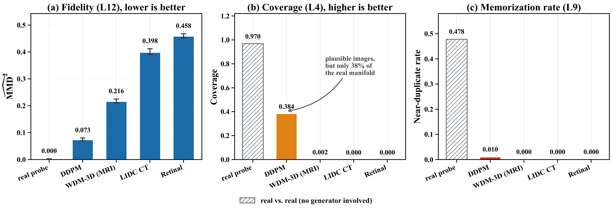
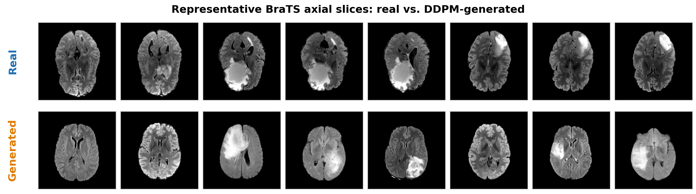
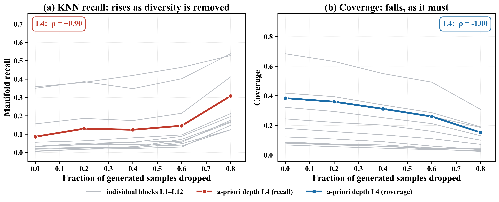
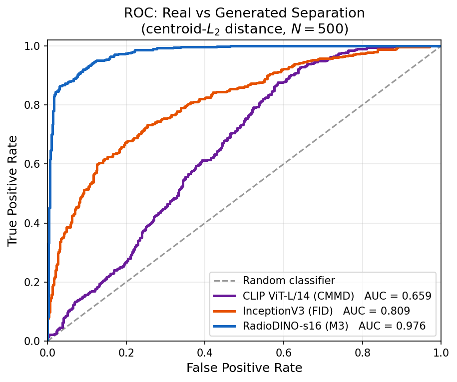
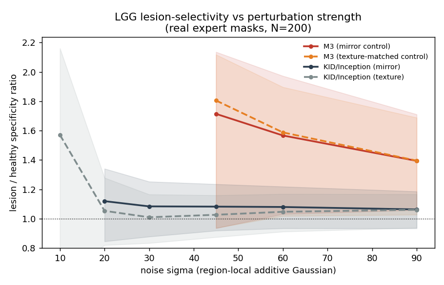

Layer 12 · lower is better
Fidelity
Unbiased multi-bandwidth RBF MMD2 between real and generated feature distributions, accompanied by a permutation p-value and bootstrap confidence interval.
M3-Score is a radiology-specific evaluation framework that separates three questions usually hidden inside one generative-image score: whether generated images match the real distribution, whether they resemble individual real examples too closely, and how much of the real manifold they cover.

Each axis is defined before the reported test outcomes and is evaluated in frozen RadioDINO-s16 features. The separation is designed to make common generative-model failure modes visible instead of averaging them away.
Unbiased multi-bandwidth RBF MMD2 between real and generated feature distributions, accompanied by a permutation p-value and bootstrap confidence interval.
Nearest-neighbor proximity from generated images to real images, used to flag unusually close matches and possible near-duplicate leakage.
The fraction of real images with a generated neighbor inside the real-set k-NN radius, so the reference radius does not shrink when generated diversity collapses.
The paper evaluates subject-diverse BraTS references, controlled diversity perturbations, feature-space alternatives, sample-size behavior, and lesion-specific perturbations.
An unconditional DDPM reaches MMD2 = 0.073 with a bootstrap 95% CI of [0.071, 0.080], while covering only 38% of the real manifold.
Conventional k-NN recall rises as generated diversity is removed (rho = +0.70 to +1.00). M3 coverage decreases monotonically at all twelve encoder blocks (rho = -1.00).
RadioDINO separates real brain MRI from in-domain DDPM output at ROC-AUC 0.819, compared with 0.555 for InceptionV3/FID and 0.582 for CLIP/CMMD features.
FID is more repeatable below N = 500; layer depths are fixed representational choices; and the weak-null permutation test is descriptive rather than a model-selection tool.




This GitHub Pages site is a presentation layer for the repository. The source release contains the evaluation implementation, figures, numerical reports, and retained logs. Medical datasets and model checkpoints are intentionally not redistributed.
conda create -n m3score python=3.10 conda activate m3score pip install -r requirements.txt
python evaluation/eval_pipeline.py \ --real_dir /path/to/real_images \ --gen_dir /path/to/generated_images \ --output_dir results/evaluation \ --metrics fid kid ssim m3 alpha
This project page describes a pre-publication academic release. Venue-specific submission, acceptance, and publication claims should only be added after official confirmation.
@article{nishankar2026m3score,
title = {M3-Score: Fidelity, Memorization and Coverage as Separate Axes
for Evaluating Generative Radiology Image Models},
author = {Sathiyamohan, Nishankar},
year = {2026}
}